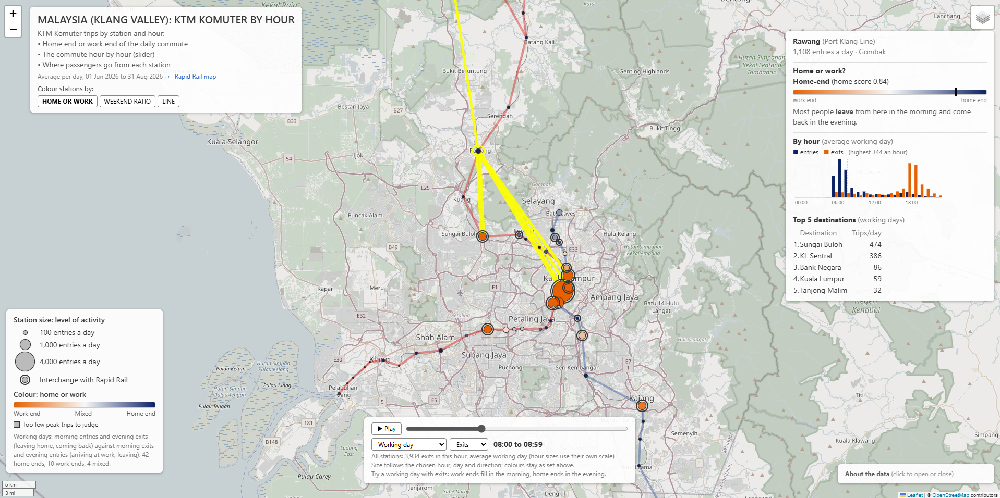

The question
Ridership figures usually arrive as totals: so many trips a day, up or down on last year. I wanted to see the city behind them. Which stations do people leave from in the morning, and which do they travel to? What is around those stations, and who lives there? How did use change as new malls opened, during festivals, and while a line was being rebuilt?
The project uses only open government and community data, and every step is in Python notebooks that anyone can rerun.
The data
| What | Source |
|---|---|
| Rapid Rail trips (LRT, MRT, Monorail) by day, origin and destination, 2023 to 2026 | data.gov.my (Prasarana) |
| KTM Komuter trips by hour, origin and destination, 2023 to 2026 | data.gov.my (KTMB) |
| Station positions and timetables (GTFS) | data.gov.my Open API |
| Shops, offices and land use within 500 m of each station | OpenStreetMap |
| Residents near each station (400 m hexagons) | Kontur Population, via HDX |
| Household income and boundaries by district | Department of Statistics Malaysia |
The two maps were built in six versions, each adding one layer: activity, surroundings, residents, change over time, festivals, and finally the hourly Komuter data.
What the data shows
New places reshape travel
Entries at TRX rose from about 5,100 to 15,600 a day after The Exchange TRX mall opened in November 2023, the largest gain on the network. The network as a whole grew by about a third, yet the biggest hubs barely moved: KL Sentral +3%, KLCC +6%, Masjid Jamek +1%. New demand went to new places.
Festivals empty the offices first
Each station was compared with its own normal week. In the Hari Raya Aidilfitri week the network is about a fifth quieter, but the drop depends on what the station is for. Bandar Tasik Selatan, next to the long-distance bus terminal, gets busier, most likely as people travel home, and Putrajaya Sentral sees four to six times its usual crowd on National Day, for the parade.
Hourly data separates home from work
Daily data cannot tell a suburb from an office district: both are busy on weekdays. Komuter data is hourly, so each station gets a home score from its peaks: people leave a home end in the morning and come back in the evening, and a work end sees the opposite. Two independent measures of this agree almost perfectly (rank correlation 0.99), and where Komuter meets Rapid Rail, 12 of 13 interchanges broadly match the station types found earlier from population data.
Some work ends are really changes of train
Rawang's most common destination is not the city centre but Sungai Buloh, where passengers can change to the MRT. Seremban's second destination is Kajang, another MRT interchange. A passenger changing trains leaves Komuter in the morning just like someone arriving at work, so several "work ends" are partly transfer points: a reminder to check what a pattern means before naming it.

A rail upgrade is reshaping commuting
The fall was not even, which ruled out a simple change in counting. Weekday peak trips fell 29%, off-peak 45% and weekends 53%; Klang and Seremban lost about 70% while Tanjong Malim, on the northern section, grew 39%. This is consistent with the KVDT2 double-track works, which have cut services since 2024 and in 2026 close the Port Klang to KL Sentral line from 11:00 to 15:00 every day. Commuters with no alternative keep travelling at the peaks; everyone else finds another way.
Problems in the data, and how they were handled
- Totals mixed with trips. The Rapid Rail file holds daily station totals in the same table as station-to-station trips. Mixing them doubles every count, so they are separated first.
- Missing exits. 32 Putrajaya Line stations record entries but never appear as a destination. Activity is therefore measured by entries only.
- New lines and free rides. The Shah Alam Line opened in June 2026 with a free month; its stations are averaged over their paid days only, which avoids understating them about threefold.
- Station positions. One Komuter station had another station's coordinates in the official feed, and the newest was missing; both were taken from OpenStreetMap.
- Local mapping habits. Malaysian shophouses and malls are tagged as commercial buildings in OpenStreetMap, which made a building-based measure of workplaces point the wrong way. It was tested and set aside.
Limits
Tap-in data shows which stations people used, not where their journeys began or ended. Rapid Rail data is daily only. Population is a modelled estimate and income is published by district. OpenStreetMap is mapped by volunteers, and the Komuter results for 2026 are shaped by the track works. Each map states these limits on the page.
Where this could be useful
- Retail and property: footfall near stations, and how quickly a new mall changes it.
- Transport planning: where passengers transfer between networks, and who is affected by works and service changes.
- Events and city services: which stations swing most on festivals and public holidays.
The same approach works for any city that publishes origin-destination ridership.
About
Lik Ren Tai applies data science in two fields: environmental science and railway systems. This project brings that experience to a question about people rather than nature or trains: how a city lives and moves. Built with Python, pandas, GeoPandas, OSMnx and Folium.
Data: data.gov.my (CC BY 4.0), Department of Statistics Malaysia, Kontur Population (CC BY 4.0), © OpenStreetMap contributors. Figures refer to June to August 2026 unless stated.